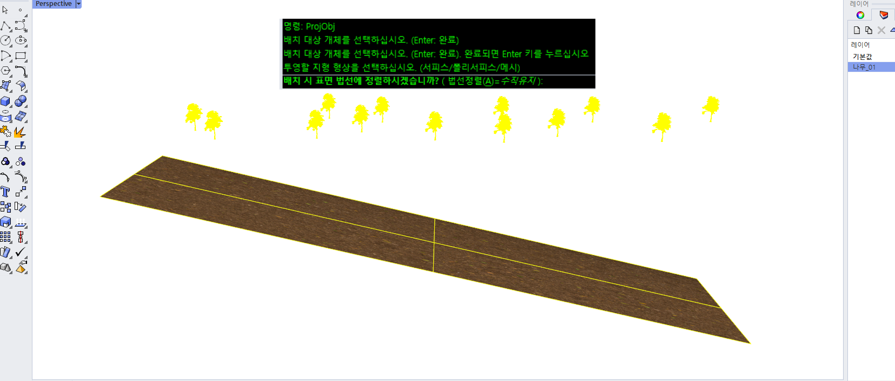

ProjObj
ProjObj :
선택한 객체의 바닥 부분을 지정한 표면에 이동하는 기능입니다.
Steps
Tree 명령 실행
투영할 객체(부품) 선택
투영처가 될 바닥면 선택
정렬 방식을 선택하세요 (법선정렬/수직유지)

Note
정렬 옵션(법선정렬/수직유지) 에 따라 배치 방향이 결정됩니다.
기준 바닥면이 곡면/비평면이면 결과가 왜곡되거나 실패할 수 있습니다. (개선중)